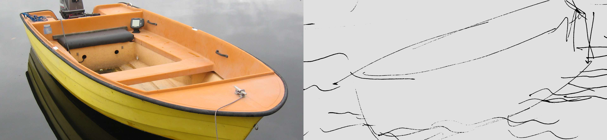

Based on the design principles we have studied, find a website, with between four and six pages, that you would consider a very bad example of design.
Propose a new design for all pages of that website. You may also rethink its structure, removing, adding, or combining pages.
Use tentative final content. (Do not use placeholder content for your text.)
Don’t forget to include a navigation menu with links to all pages. You want to write your menu as a list. (Also, you may be tempted not to include a link from a page to itself, but it’s not a good idea.)
You have some temporary strict restrictions, though:
You can’t use style. For this assignment, you will make sure to structure the documents with the appropriate tags and the classes you find necessary.
It’s probably a good idea to link all of your pages to a single CSS file, so you don’t have to do it later. However, you may include only one line in your CSS for now: img {width: 40%; }. (We can keep the images small for now.)
Replace the logo of the company with an image of their name in Helvetica Regular and the color black.
All the other images should also be replaced with sketch placeholders.
Example: Use the image on the right as a replacement for the one on the left.

(Don’t worry, you’ll be able to use nice images, colors, and typefaces later.)
For now, you will be evaluated on your HTML skills as well as on your hierarchy and semantic choices.
As usual, make sure to avoid the most common mistakes
Publish your pages on the URL:
calpoly.edu/~username/grc338/redesign-content-hierarchy
Click on your name to check if it’s working.
GRC 338-02: Due Sunday, 17 February 2019, at 11:55 pm.
GRC 338-03: Due Sunday, 17 February 2019, at 11:55 pm.
GRC 338-04: Due Tuesday, 19 February 2019, at 11:55 pm.
This assignment counts for 30% of your grade for this project.